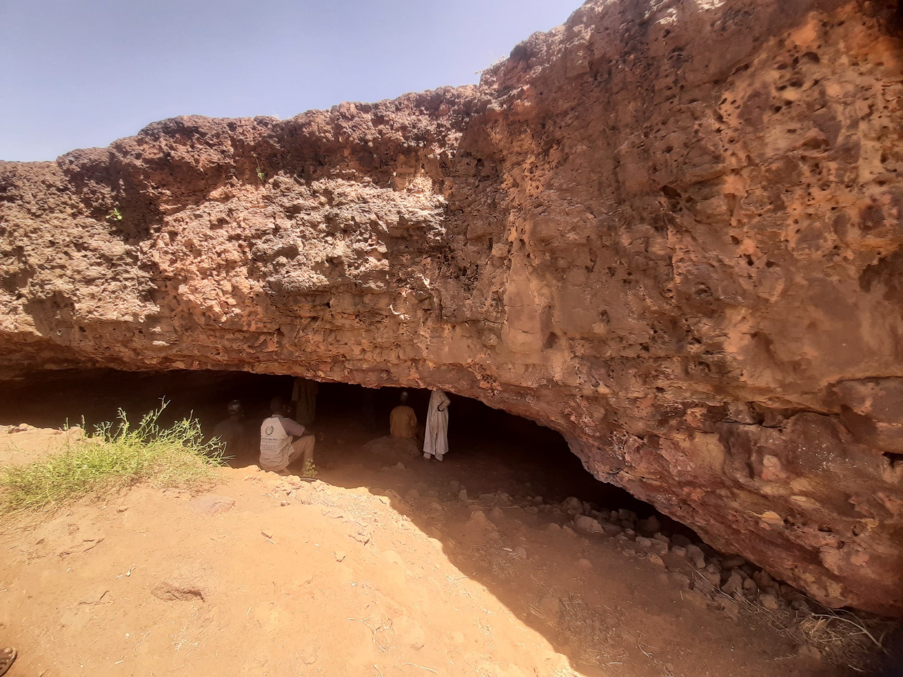
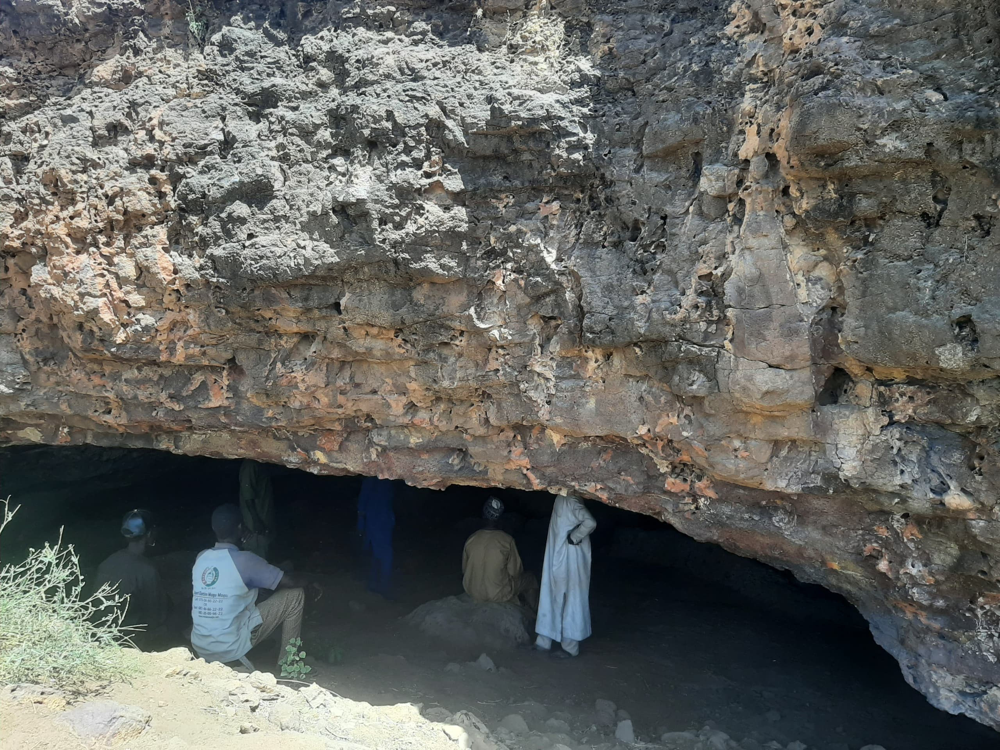
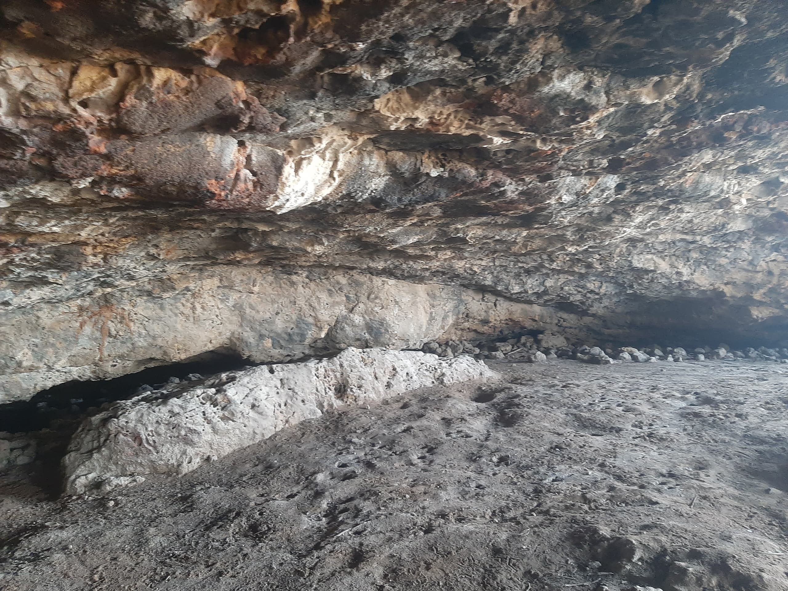
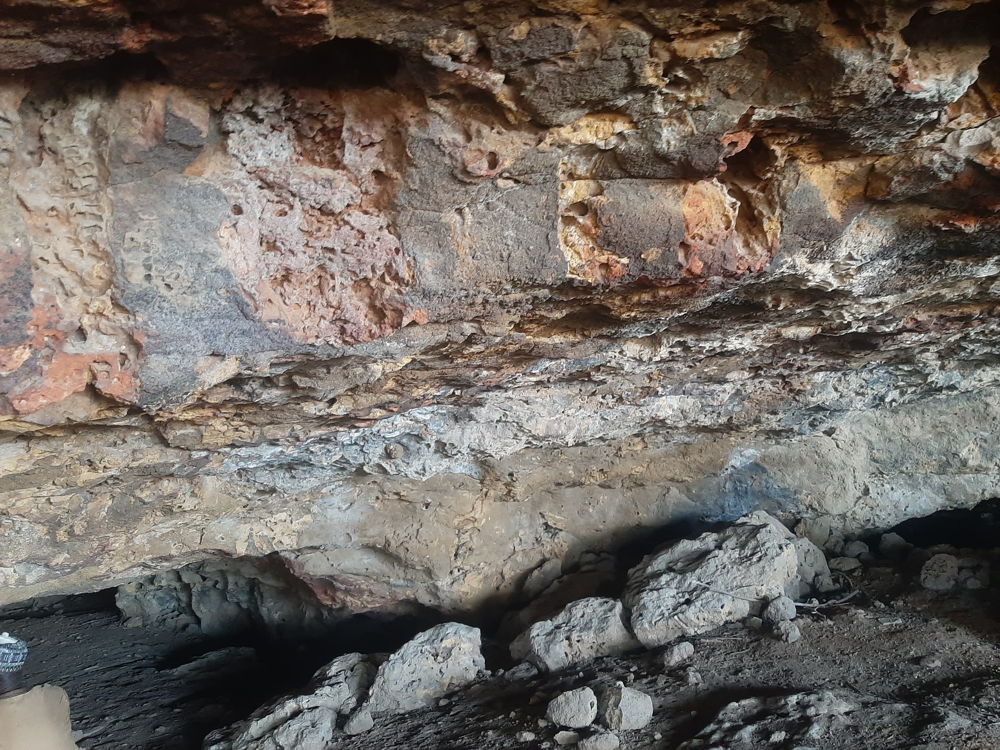
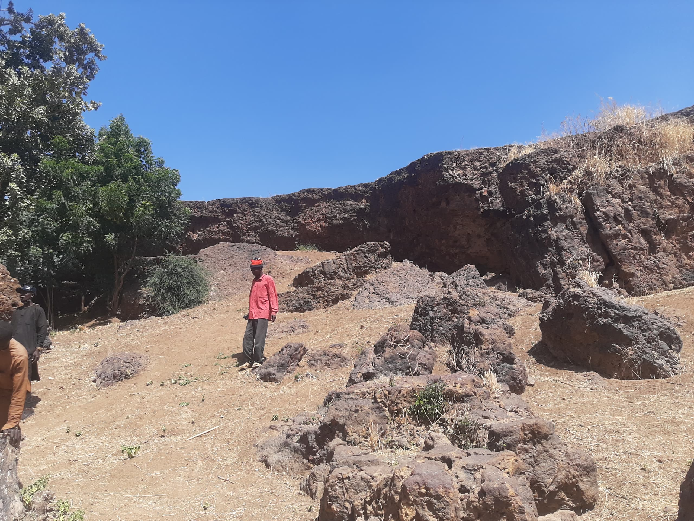
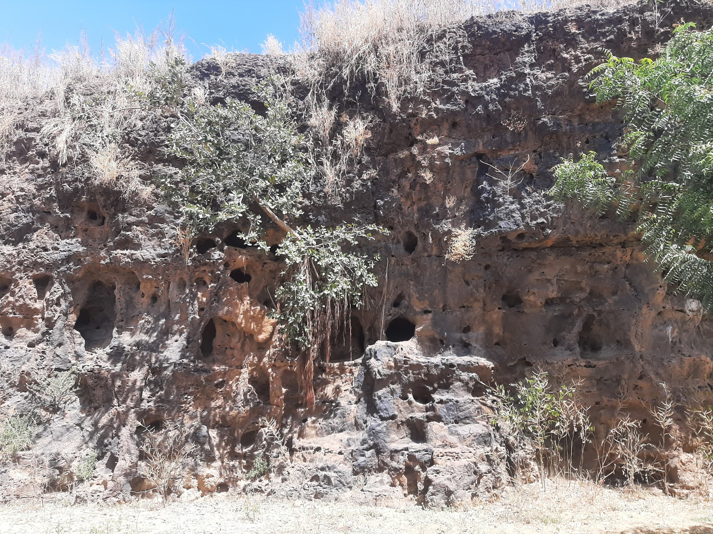
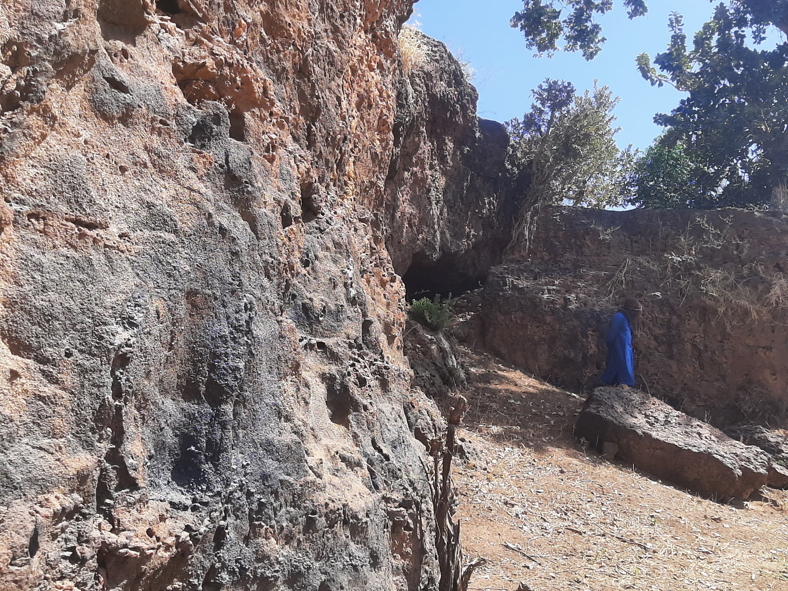
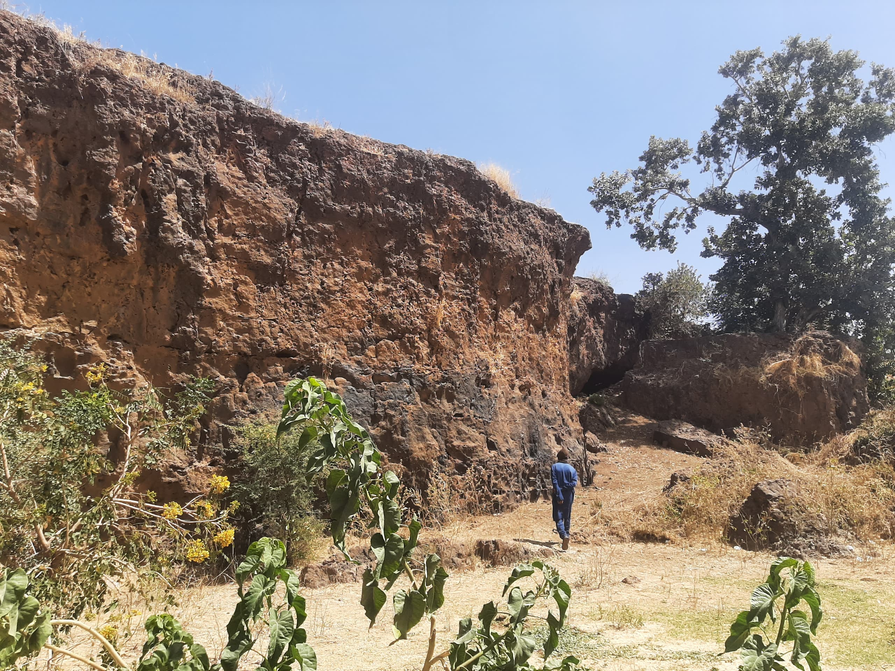

Welcome to our Tourist Destination
Explore the beauty of our city
Share Your Tour Images
GUJAM CAVE: A HAVEN OF RICH HISTORY AND CULTURAL DIVERSITY
Bagau, also known as Gujam, is a village with a rich history. The name Gujam originates from the Karai-Karai
Language, meaning "big hole" or "deep well." The people of Bagau originated from Jalam village and later merged
with other Karai-Karai people from Dafchi village. Together, they formed a large settlement called Ganuwar Gujam,
now located in Pakarau Ward, Nangere Local Government Area, Yobe State.
Gujam Village was a prominent town around 1750 AD, before the arrival of European colonizers in Nigeria.
The Kogon Gujam, a large hole or well was dug around 1750 AD by the people of Bagau as a result of wars
between the Karai-Karai people and the Kanem-Borno Empire. The Cave served as a hiding place and a means of
defense against enemies.
Years later, the cave was taken over by the Kuraye people, who made it their home. According to historical accounts,
the Kuraye people lived in the Cave for many years without harming the people of Gujam village or their aminals.
The reason for the Kuraye people's return to the cave is attributed to the change of name from Ndala Bagau to Ndala
Gujam, meaning "The Cave of Gujam". The Cave is remarkably deep, allowing one to walk for kilometers
ungerground, and its end remains unknown. Attempts were made to explore the cave during the colonial era but are
unsuccessful.
In 2024, the Nangere Local Government Area, under which Gujam village falls, initiated a survey of the Cave with the
help of experts.
Do try and Pay a visit to Nangere and "Explore the Uncharted", Its
worth the Tour!!.

The Entrance of the Cave.
People Sitted at the Entrance of the cave
The Inside View of the Cave
The Inside View of the Cave
The Surroundings of the Cave.
The Outside View of the Cave
The Second Entrance into the Cave
The Outside View of the Cave
Comments